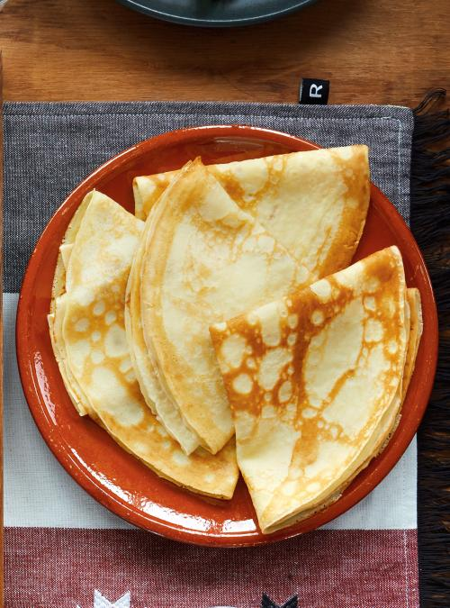

Simple Crepes

Versatile and easy crepes from All Recipes.
These can be made both savory (scrambles eggs and hollandaise) and sweet (lemon and powder sugar) while being easier than pancakes.
8 crepes 4 servings, Prep time: 10 mins, Cook time: 20 mins, Total time: 30 Minutes
Ingredients
- 2 eggs
- 1/2 cup milk
- 1/2 cup water
- 2 tablespoons melted butter
- 1 cup all-purpose flour
- 1/4 teaspoon salt
- 1-2 tablespoons sugar (optional for sweet dish)
Steps
- In large bowl, whisk eggs and mix in milk, water, and melted butter.
- Gradually add in salt, sugar, and flour through sifter. Beat until smooth.
- Heat a lightly oiled pan over medium high heat. Scoop approximately 1/4 cup of batter onto pan. Tilt pan in circular motion so batter coats surface evenly.
- Cook crepe for about 2 minutes, until bottom is light brown. Loosen with spatula to flip and cook other side.
- Serve hot with savory or sweet toppings.